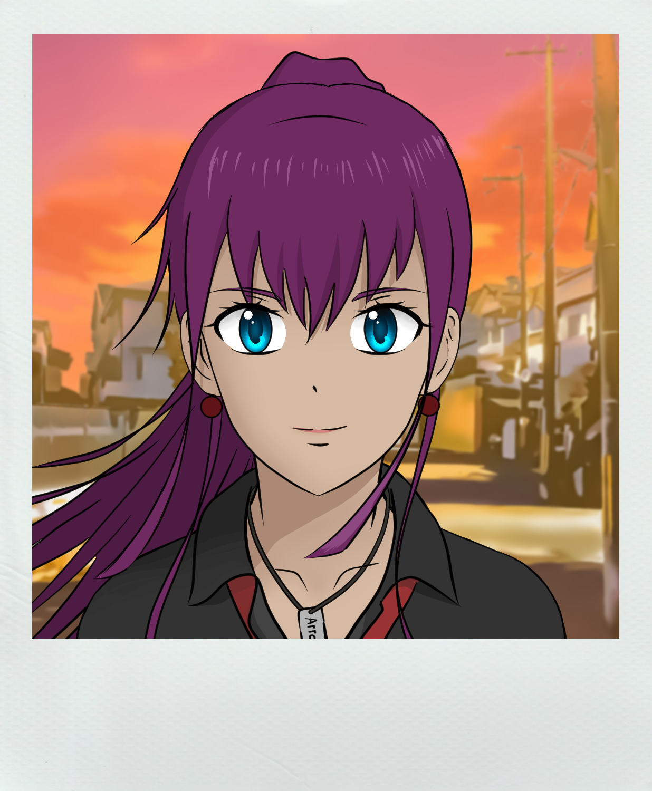
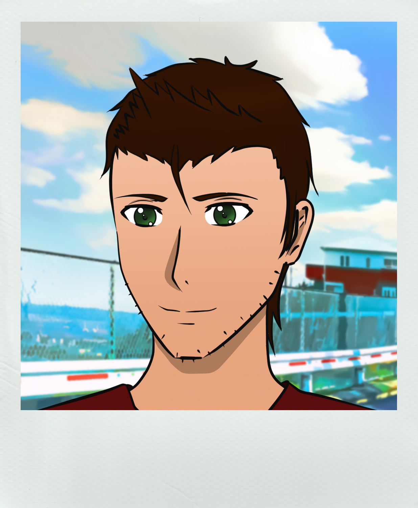
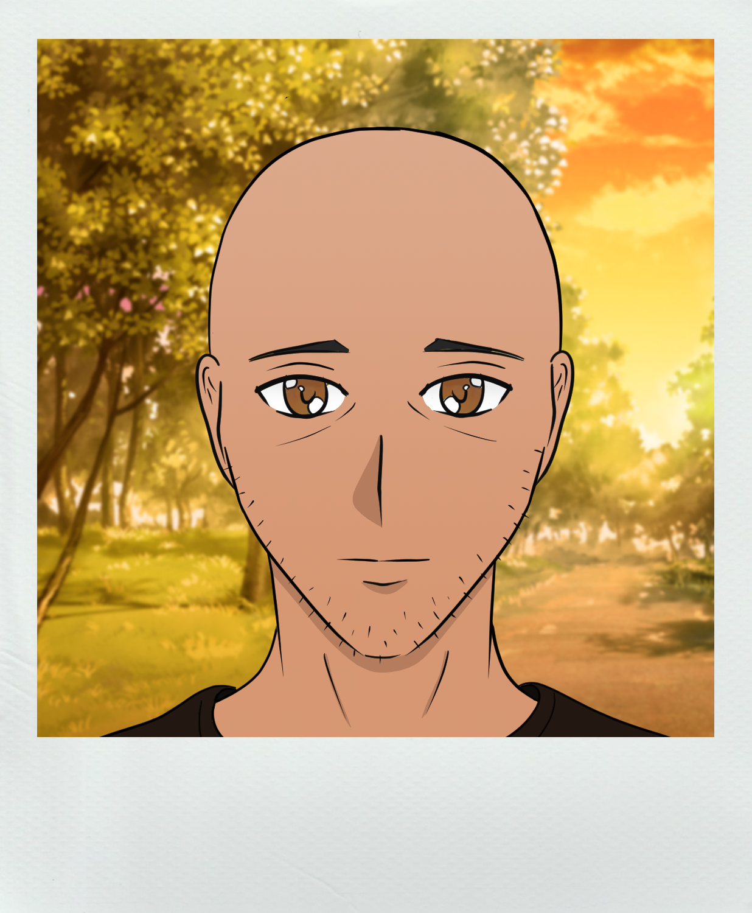
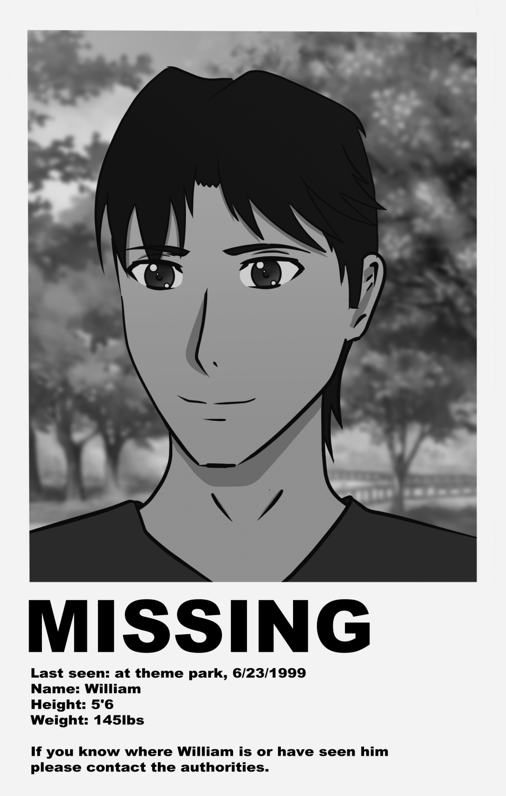

Synopsis
Summerbreak, 2009; you stand alone along what feels
like a deserted road as you wait for the bus to arrive..
Your destination is a paculiar theme park located high off in
the mountains. A place prided with being the best in the world, but
it's odd you think that no one seems to remember when or how
it come about being; it's as if it has always been.
Rumours of a ride that vanashed, two missing people, and strange
unexplainable sightings have
haunted this amusment park's history for the past 10 years. Nobody believes
any of these so-called romours..
But you intend to solve these mysteries.
Main Characters
Kana
A temp-hire working at The Theme Park. Known for her
quick-wit, intellgence, and love for coffee.
She's considored a top class roller coaster engineer.
Despite her professionalism she seems to be searching for something at The Theme Park.

Tim
The laid back manager for the park's ride managment team. Tim is an easy going person
who looks out for his employees.
Usually found in the meeting room handling
paper workwork. He knows much more then he lets on.

Paul
A tired looking park goer once known for telling tall tales. Word is he carries with
him a dark secret.
Paul now spends is days quietly at the local cafe.

William
A ride operator that went missing from the park 10 years ago. An investigation was launched
but William was never found.
